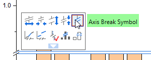

FAQ-118 Wie füge ich in einem Diagramm zwei Achsenunterbrechungen ein?
Add-2Breaks
Letztes Update: 19.03.2020
In einem Origin-Diagramm können Sie Achsenunterbrechungen auf der Registerkarte Unterbrechung im Dialog Achsen hinzufügen.
Um zum Beispiel zwei Achsenunterbrechungen in ein Diagramm einzufügen?
- Klicken Sie doppelt auf die Achse in dem Diagramm, um den Dialog Achsen zu öffnen. Wechseln Sie dann zur Registerkarte Unterbrechungen.
- Wählen Sie 2 in der Auswahlliste Anzahl der Unterbrechungen. Dann können Sie weitere Optionen für die Unterbrechungen festlegen.
- Weitere Anpassungen wie die Skalierung vor/nach der Unterbrechung nehmen Sie vor, indem Sie auf die Schaltfläche Details klicken, um den Dialog Details der Unterbrechungen. Beachten Sie, dass Sie auch die Achsenunterbrechung wählen und die verfügbaren Schaltflächen der Minisymbolleiste verwenden können, um die Unterbrechung benutzerdefiniert anzupassen.
- 
Hinweis: Auf einer einzelnen Achse ist die maximale Anzahl der hinzugefügten Unterbrechungen 7.
Schlüsselwörter: Achsenunterbrechung, doppelte Unterbrechung, mehrere Unterbrechungen, benutzerdefinierte Anpassung des Diagramms, Dialog Achsen, Achsenformat
Origin-Version mind. erforderlich: 2015 SR0